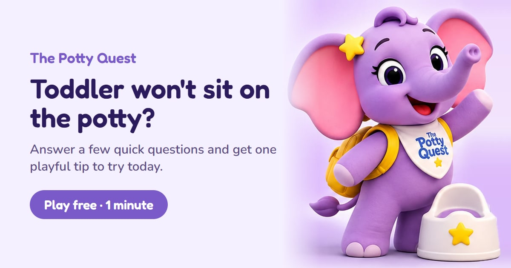
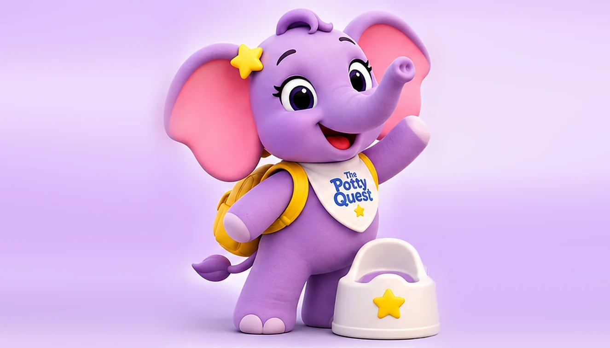
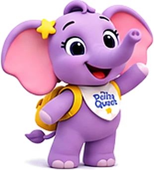

Our own product, not an affiliate offer: no new landers. The live funnel, 3 Facebook angles with ad copy and image ads, and the tracking link for each.
utm_content names the angle, so WooCommerce Order Attribution shows which one sold. On /play links the tags must come before the #. Use paid_social for paid ads and social for organic posts.The free tip turns on one real insight (the yes-or-no “question trap”, the chase, the big leap), so the click closes a genuine loop.
The product is easy to picture: one playful activity a day for 14 days with Ellie. Clear for warmer viewers, and it lands on the full homepage.
The NO standoff is the moment every parent in this stage knows. Written as a common stage, never as a claim about the viewer.
Skipped: no published reviews or numbers yet, and the method never invents them. Revisit once real reviews exist.
Skipped: plays on parental guilt and worry, which brief 06 rules out, and it edges into health claims.

The full story: how it works, a peek inside Potty Island, FAQs. Every button goes to the first quiz question.
https://thepottyquest.com/

Straight to question 1. The free tip shows on screen before any email is asked for, then the $9.99 offer.
https://thepottyquest.com/play/#/start

For posts and groups. Redirects to the quiz with the launch_nov26_short tags already on.
https://thepottyquest.com/freeGenerated by the Campaign Agent · Claude Code